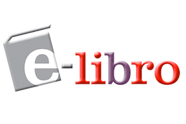
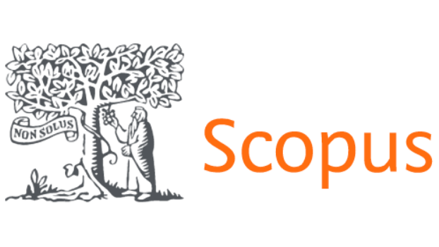
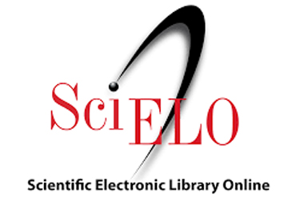

Repositorio Institucional ISTLC
El Repositorio Institucional deL Instituto Superior Tecnológico Liceo Cristiano incluye la producción intelectual y Académica del Instituto en todas sus disciplinas. El repositorio permite reunir, registrar, divulgar, preservar y dar acceso al conocimiento generado en el Instituto, compatible con los estándares nacionales e internacionales, para garantizar su integración con aquellos portales similares.
| Reglamento de titulación : | Ver documento |
| Politicas del Repositorio : | Políticas del repositorio institucional |
Contenido del Repositorio
Elija un grado académico para listar sus colecciones
Añadido Recientemente
-
“Metodologías modernas de enseñanza aplicadas a la formación cristiana elemental como estrategia que facilite el aprendizaje
(Instiuto Superior Tecnologico Liceo Cristiano, 2023-04-04)El impacto que tiene la gestión financiera sobre la rentabilidad es muy importante porque el manejo correcto de los recursos financieros puede influir de manera significativa en la forma en la cual una empresa puede generar ... -
“Propuesta para la implementación de una aplicación móvil “AUTOSHOP” para la comercialización de vehículos, repuestos y accesorios, en la ciudad de Guayaquil”.
(Instituto Superior Tecnologico Liceo Cristiano, 2024-11-10)El presente trabajo de investigación tiene como objetivo desarrollar la propuesta de una aplicación móvil que facilite el proceso de búsqueda, compra y venta de vehículos, repuestos y accesorios en la ciudad de Guayaquil; el mismo tiene como propósito tener acceso a la comercialización en línea de manera segura y confiable, además otro propósito es promover y acelerar el proceso de compra y venta de los usuarios. -
El impacto de la educación física en el proceso de educación de los niños en La Unidad Educativa Fiscal “Agustín Castro Espinoza” de flor de bastión, bloque 17 de la parroquia Pascuales de la ciudad de Guayaquil.
(Instituto Superior Tecnologico Liceo Cristiano, 2023-06-16)La presente investigación aborda la problemática que radica desde la presencia de la pandemia producto del COVID 19, la misma que obligo a los estudiantes a recibir clases de manera virtual. -
Creación y estructuración de un plan de negocios para la comercialización de pollos asados a ubicarse en SAUCES VI de la ciudad de Guayaquil denominado “Pollos Junior”
(Instituto Superior Tecnologico Liceo Cristiano, 2023-03-02)Constituye un plan de negocios que determina la pre factibilidad de la implementación de un asadero de pollos, estructurado a base de los respectivos estudios de mercado, técnico, financiero y organizacional. Este tipo de emprendimiento se han incrementado con el pasar de los años convirtiéndose en una de las actividades comerciales de mayor impacto económico introduciéndose también en estilos franquicias.... -
Bibliotecas Virtuales
El Repositorio Institucional del Instituto Superior Tecnológico Liceo Cristiano incluye la producción intelectual y Académica del Instituto en todas sus disciplinas. El repositorio permite reunir, registrar, divulgar, preservar y dar acceso al conocimiento generado en el Instituto, compatible con los estándares nacionales e internacionales, para garantizar su integración con aquellos portales similares.
E-libro
E-LIBRO es una colección de libros electrónicos en idioma español Disponibilidad de temas como Agricultura, Historia, Bibliografías, Geografía, Antropología, Historia, Literatura, Medicina, Ciencias Militares, Tecnología, Religión, incluye motores de búsqueda.
Scopus
Es una base de datos bibliográfica de resúmenes y citas de artículos de revistas cientificas. Cubre aproximadamente 18.000 titulos de más de 5.000 editores internacionales, incluyendo la cobertura de 16.500 revistas revisadas por pares de las áreas de ciencia, tecnología, medicina y ciencias sociales, incluyendo artes y humanidades.
Scielo
Es un modelo para la publicación electrónica cooperativa de revistas cientificas en Internet. Especialmente desarrollado para responder a las necesidades de la comunicación cientifica en los países en desarrollo y particularmente de América Latina y el Caribe, el modelo proporciona una solución eficiente para asegurar la visibilidad y el acceso universal a su literatura cientifica, contribuyendo para la superación del fenómeno conocido como 'ciencia perdida'.